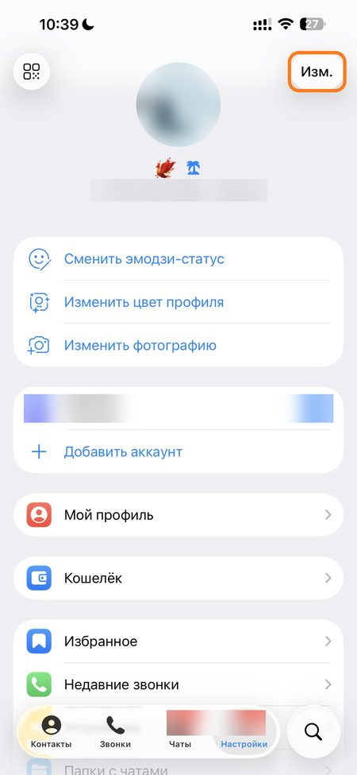
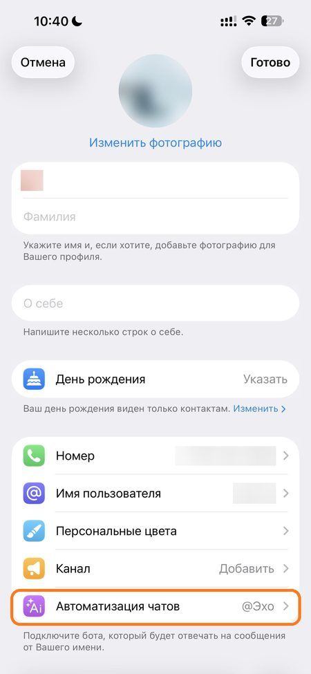
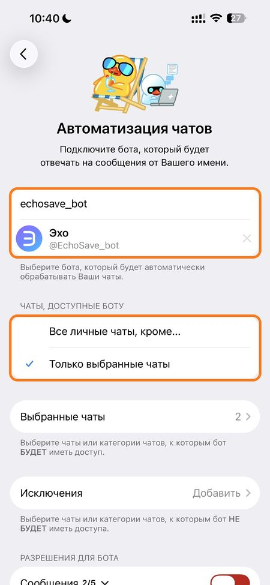
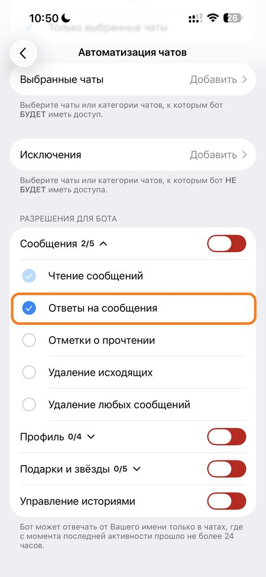

🗑
Удалённые и изменённые
Собеседник удалил сообщение — пришлю, что там было, с фото и файлами. Исправил — пришлю «Было» и «Стало».
Эхо пришлёт, что собеседник удалил или изменил в личном чате Telegram, — с фото и файлами. Голосовые — сразу текстом.
Собеседник удалил сообщение — пришлю, что там было, с фото и файлами. Исправил — пришлю «Было» и «Стало».
Расшифровка — прямо в переписке или только вам. Речь распознаётся на нашем сервере.
Ответьте на такое фото или видео свайпом до открытия — копия придёт в чат с ботом.
Собеседник удалил весь чат? В меню бота — «📜 Переписка»: пришлю всё, что успел сохранить, одним файлом — как сам чат.
Когда собеседник удаляет чат целиком, Telegram не сообщает об этом ботам. Но сохранённое никуда не делось — Эхо пришлёт переписку одним файлом.
Файл выглядит как сам чат: ваши сообщения справа, собеседника слева, удалённые и изменённые помечены. В нём то, что пришло после подключения бота и ещё хранится.
займёт меньше минуты
1. Откройте Настройки → «Изм.»кнопка «Изм.» — вверху справа
2. Выберите «Автоматизация чатов»пункт внизу списка
3. Впишите @EchoSave_botи выберите «Все личные чаты, кроме…»
＋. Для расшифровки в перепискевключите «Ответы на сообщения» — бот подскажет, если нужно.




Получится — бот напишет «✅ Бот подключён».
Скриншоты с iPhone. Не нашли «Автоматизацию чатов» на Android — напишите в @EchoSave_Support.
Открыть @EchoSave_botВсё, что умеет бот, — для новых пользователей. Отсчёт с подключения, один раз на аккаунт. Карта не нужна.
Месяц продлевается сам, отменить — кнопкой в боте. Год — разовый платёж.
Карта российского банка или СБП. Разовый платёж, без автопродления.
Через @CryptoBot: USDT, TON, BTC и другие. Разовый платёж.
Без подписки бот сообщает только факт удаления — без текста и файлов. Оплата — внутри бота.
Сохранённое бот удаляет автоматически. Стереть сразу — Меню → 🧹 Очистка.
AES-256, у каждого пользователя свой ключ.
Уведомления и файлы приходят только вам. Функции «посмотреть чужую переписку» в боте нет ни у кого, включая нас.
Группы, каналы, секретные чаты и то, что пришло до подключения.
Подробно — в документе «Условия и конфиденциальность».
Нет. И сам Premium удалённые сообщения не показывает.
Нет — Telegram не сообщает собеседнику, что вы подключили бота. Уведомления об удалённом приходят только вам. Собеседник увидит лишь то, что бот пишет в переписку от вашего имени: расшифровку голосового (её можно переключить на «только мне» в Меню → 🎙 Голосовые) и ваш ответ свайпом на «один просмотр».
Нет: бот видит только то, что пришло после подключения. Поэтому подключать стоит заранее.
Да, если бот был подключён. Откройте в боте Меню → 📜 Переписка и выберите чат — бот пришлёт всё, что успел сохранить, одним файлом, как сам чат; удалённые сообщения в нём помечены. Сам Telegram боту не сообщает, что чат удалён, поэтому файл присылается по кнопке.
Только личные чаты, которые вы выбрали в «Автоматизации чатов». Группы, каналы и секретные чаты — нет.
«Один просмотр» — копия придёт, только если ответить свайпом до открытия. Исчезнувшее по таймеру автоудаления бот не присылает: это выбор собеседника. Удалённое руками раньше срока — пришлёт.
Уведомления приходят в чат с ботом, поэтому видны везде, где вы вошли в Telegram: на телефоне и на компьютере. Подключить бота проще всего в настройках Telegram на телефоне.
Отключить — Настройки → «Изм.» → Автоматизация чатов → ✕ рядом с «Эхо». Стереть сохранённое или удалить аккаунт — Меню → 🧹 Очистка.
В поддержку: @EchoSave_Support. Там же — вопросы об оплате и возвратах.
В самом Telegram удалённое сообщение не вернуть: оно исчезает у обоих собеседников. Telegram Premium удалённое тоже не показывает.
Зато в настройках Telegram есть раздел «Автоматизация чатов». Туда можно подключить бота, и он будет получать сообщения ваших личных чатов в момент, когда они приходят. Эхо подключается именно так: запоминает сообщения из выбранных чатов, и если собеседник удалит сообщение, присылает вам, что там было, — текст, фото, видео, голосовые и файлы.
Важно: бот видит только то, что пришло после подключения. Удалённое раньше не вернёт ни один бот, поэтому подключать его стоит заранее. Группы, каналы и секретные чаты ботам недоступны.
Если собеседник исправил сообщение, Эхо пришлёт обе версии — «Было» и «Стало» — и время отправки. Сам Telegram историю правок не показывает.
Когда собеседник удаляет чат целиком «у обоих», Telegram не сообщает об этом ботам — уведомления не будет. Но сохранённые сообщения никуда не делись: в меню Эха откройте «📜 Переписка» и выберите чат. Бот пришлёт файл, который выглядит как сам чат: ваши сообщения справа, собеседника слева, удалённые и изменённые помечены. В файле — то, что пришло после подключения бота и ещё хранится.
Откройте бота, нажмите /start и подключите его за минуту.
Открыть @EchoSave_bot